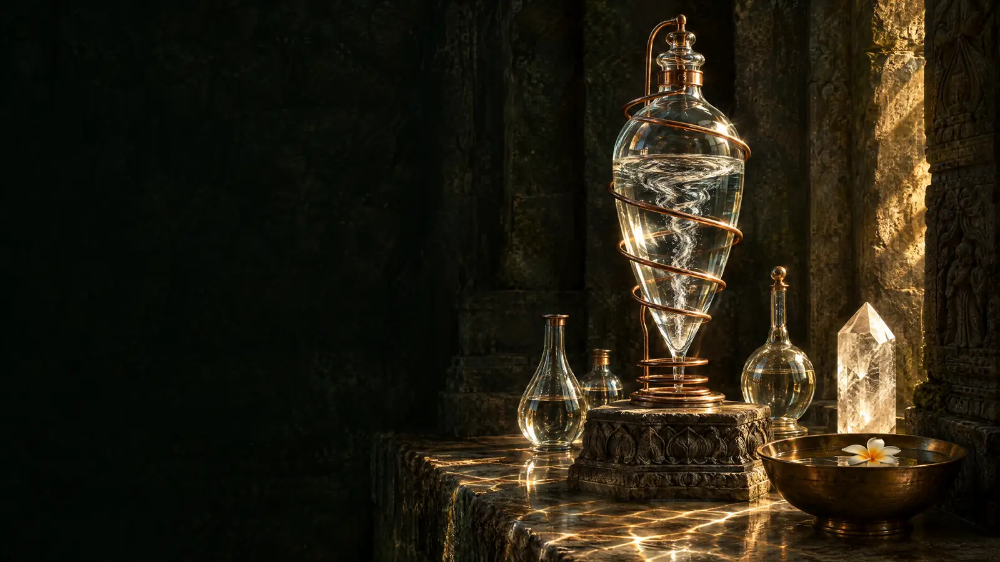
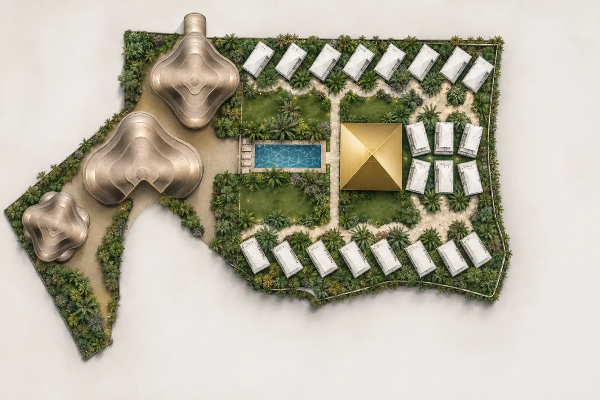
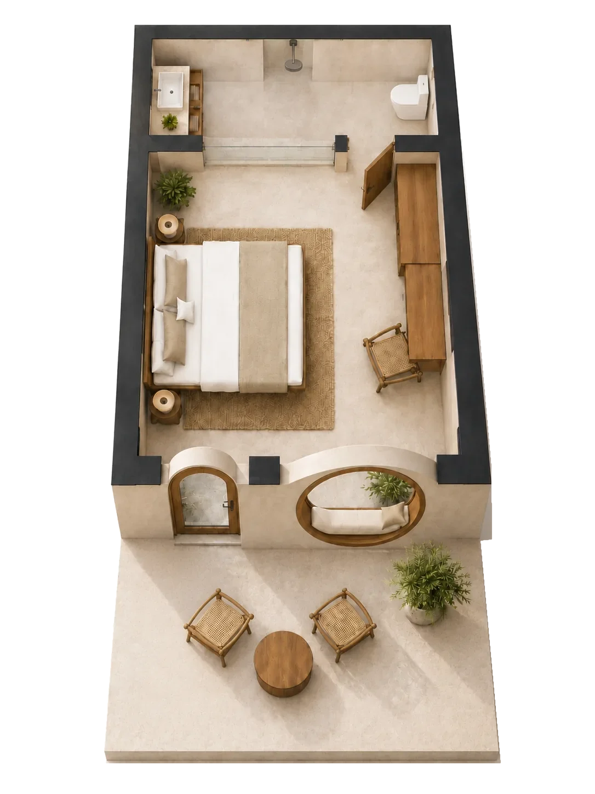
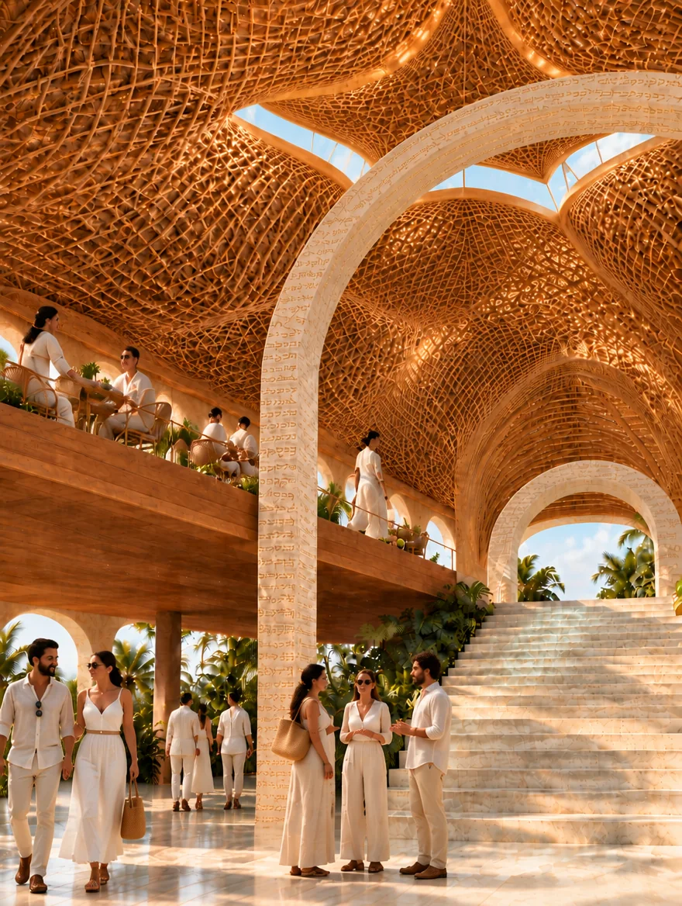
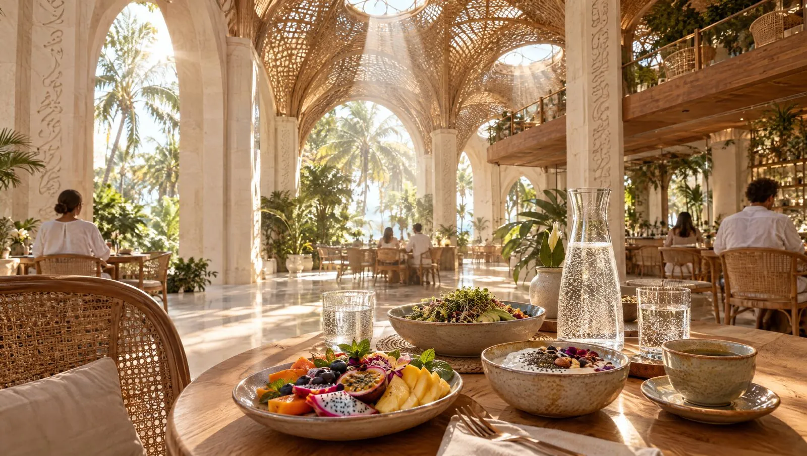
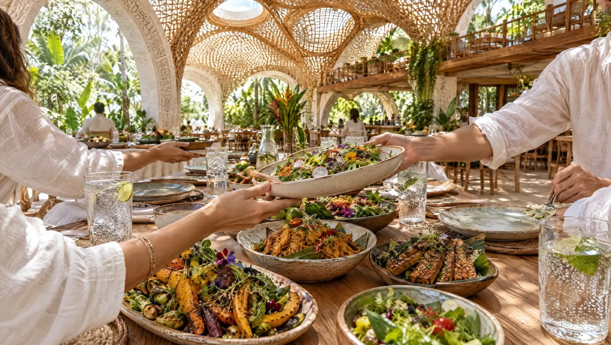
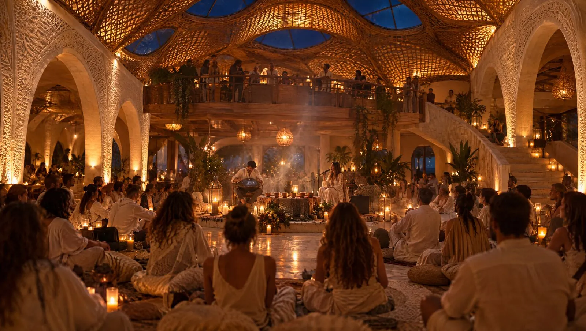
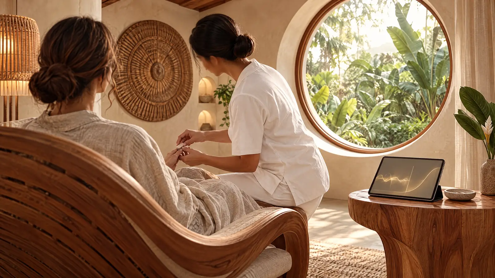

Cómo se prepara el agua
Agua estructurada
Pureza, equilibrio mineral y preparación, estudiados a través de propiedades físicas medibles.
Un santuario de sanación y retiro en Bali: un templo de transformación donde se encuentran la espiritualidad con raíces, la arquitectura intencional y la ciencia emergente.
Del boceto al santuario
Cada línea trazada con intención, antes de colocar la primera piedra.
La geometría sagrada toma forma: pirámide, eje de agua, jardín.
La Ascension Pyramid de noche, su haz de luz sobre la selva.
La sala de sonido bajo la pirámide, llena de vida.
Nuestra misión
persona despierta
Empieza con una persona.
Después, la luz se comparte.
Se forma una comunidad en un mismo campo.
100.000 vidas elevadas cada año.
Cuerpo
Descanso, hidratación y ritmos naturales que apoyan la vitalidad celular.
Emoción
Prácticas somáticas que dejan que la emoción retenida se mueva por el cuerpo.
Espíritu
Un camino con raíces hacia los dones latentes y una conciencia ampliada.
El ritmo diario de MILUJ: cada práctica tiene lugar en espacios diseñados para ella. Pasa el cursor sobre una tarjeta para pausarla; desliza más rápido y el círculo gira contigo.
Plan maestro conceptual. Toca un punto para ver qué hay allí. Sigue deslizando y las Temple Houses se iluminan.
Cada una de las 22 Temple Houses se construye en torno a su propio enfoque de sanación. Sigue deslizando: sus capas aparecen una a una.


El restaurante vegetariano es el salón de MILUJ: un lugar para comer, encontrarse y celebrar, abierto a los huéspedes y a los amigos de la isla.
En cada mesa se sirve agua viva con hidrógeno del propio sistema del santuario. La sala está construida como las Temple Houses, así que aquí una comida nutre el cuerpo y afina en silencio el espíritu.
Fruta de la isla, granos germinados e infusiones de hierbas, con un vaso de agua viva con hidrógeno para empezar el día.
Platos vegetales compartidos en mesas largas: sin prisa, coloridos y de temporada, cocinados para nutrir más que para llenar.
Charlas, ceremonias de cacao, música en vivo y viajes sonoros reúnen a huéspedes y comunidad local en un mismo campo.





Cómo se prepara el agua
Pureza, equilibrio mineral y preparación, estudiados a través de propiedades físicas medibles.
Lo que el agua transporta
Una sección de la piscina rica en hidrógeno, donde el H₂ llega al cuerpo a través de la piel mientras descansas en el agua. Un campo de investigación prometedor y aún emergente.
La cifra de «hasta 24 horas» es un objetivo indicado por el proveedor. La curva convencional es ilustrativa; la pérdida real de H₂ depende de la concentración, el recipiente, la temperatura y la manipulación. MILUJ verificará ambos perfiles de forma independiente antes de presentarlos como resultados medidos.
No solo «me siento mejor». Mediciones opcionales antes y después, con métodos validados y profesionales cualificados, dan a los huéspedes palabras y datos para el cambio que sienten.

Marcadores validados seleccionados establecen un punto de partida personal a la llegada.
El agua, el descanso, el movimiento y el entorno del templo forman un solo viaje.
Una medición tras la estancia hace visible el cambio significativo.
Las imágenes microscópicas de sangre solo pueden usarse como observación visual, nunca como prueba diagnóstica por sí solas.
Un santuario, realizado con integridad, se convierte en la base de muchos.
Base
Dos años de trabajo de sombra, constelaciones cuánticas y trabajo energético: la base invisible bajo la arquitectura.
Diseño
El santuario, los templos privados y los caminos de sanación integrados toman forma.
Ahora
Las negociaciones por los terrenos colindantes preparan el proyecto para más servicios y crecimiento.
Después
El primer centro completo marca un nuevo estándar de espiritualidad con raíces.
Horizonte
Una familia de futuros santuarios enraizados en la misma unión sagrada.
Una invitación a generar impacto.
Valoración actual del proyecto
Arquitectura, agua, ciencia y espíritu, evolucionando juntos.
Te daremos la bienvenida por correo y te invitaremos a una breve llamada.